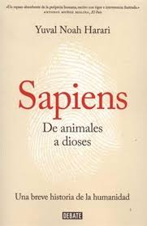

Worldreading


Hace70.000 años al menos seis especies de humanos habitaban la Tierra. Hoy solo queda una, la nuestra: Homo
Sapiens. ¿Cómo logró imponerse en la lucha por la existencia? ¿Por que nuestros ancestros recolectores se unieron
para crear ciudades y reinos? ¿Cómo llegamos a creer en dioses, en naciones o en los derechos humanos; a confiar
en el dinero, en los libros o en las leyes? ¿Cómo acabamos sometidos a la burocracia, a los horarios y al
consumismo? ¿Y cómo será el mundo en los milenios venideros?
En Sapiens, Yuval Noah Harari traza una breve historia de la humanidad, desde los primeros humanos que caminar.
Nº de páginas:496
Editorial:DEBATE
Idioma:CASTELLANO
Año de edición:2015